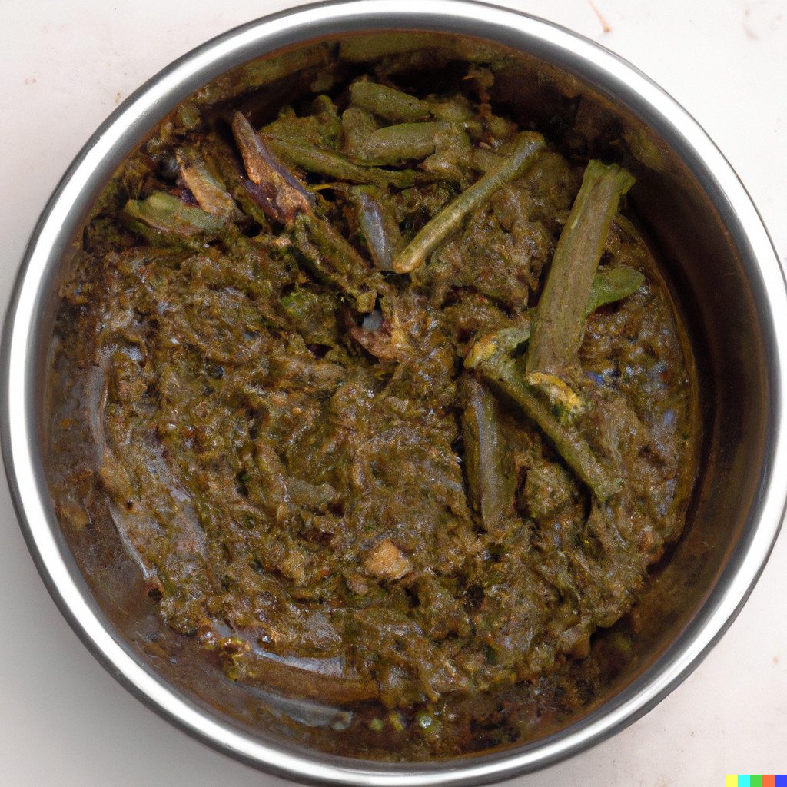

Muddy Mystery Stew

Muddy Mystery Stew is a culinary creation designed to evoke a sense of intrigue. This dish combines earthy, raw elements, resulting in an overall interesting appearance, taste, and aroma.
Ingredients:
- 1 cup mud (try to make sure it's free of contaminants)
- 1 cup slimy snails (maybe wash them first)
- 1 cup rotting vegetables (assorted)
- 1 tablespoon spoiled milk
- 1 teaspoon expired spices (choose your favorite)
- 1/2 cup murky water
- 1 teaspoon hot sauce
- Salt and pepper to taste
Instructions:
- Start by collecting fresh mud.
- In a large pot, combine the mud, slimy snails, and rotting vegetables. The vegetables can include wilted lettuce, mushy tomatoes, and moldy carrots for that extra touch.
- Pour in the spoiled milk and sprinkle the expired spices over the mixture. Choose spices that have lost their flavor and aroma due to their expiration date.
- Add the murky water.
- Place the pot over low heat and let the ingredients simmer for an extended period. This will intensify the qualities of the stew, as well as blend the flavors together.
- Season with salt and pepper to taste.
Serving Suggestion:
Accompany the Muddy Mystery Stew with a side of stale bread or moldy crackers to complete the experience. It's best to consume this dish in a dimly lit room, as it will help to intensify the mystery.
This recipe is purely fictional and is not intended for actual consumption.